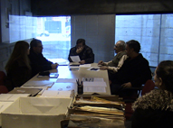
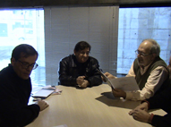
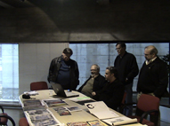
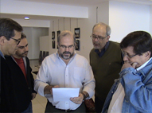

Seleção
O processo de seleção das obras foi dividido em duas etapas: a Pré-Seleção e Seleção Final.
A comissão de seleção e premiação do 17º Encontro de Artes Plásticas de Atibaia foi formada pelos críticos Jacob Klintowitz, Nelson Screnci e Paulo Klein. Os trabalhos de pré-seleção foram feitos com a presença do Secretário de Cultura, Vitor Carvalho – Presidente da Comissão Organizadora – e Paulo Cheida Sans, curador do evento, juntamente com membros da organização.
Pré-Seleção:
|  |  |  |
Análise das propostas |
Comissão Julgadora Nelson Screnci, Jacob Klintowitz e Paulo Klein |
Jacob Klintowitz, Paulo Klein, Nelson Screnci acompanhados pelos organizadores Vitor Carvalho e Paulo Cheida Sans |
Seleção Final:
|  | ||
O curador Paulo Cheida Sans lê a ata de premiação e seleção na presença do júri e do Vitor Carvalho - Secretário de Cultura |
Vista parcial das obras |
Vista parcial das obras |
 |
||
Jacob Klintowitz |
Nelson Screnci |
Paulo Klein |
Comissão de Seleção e Premiação |